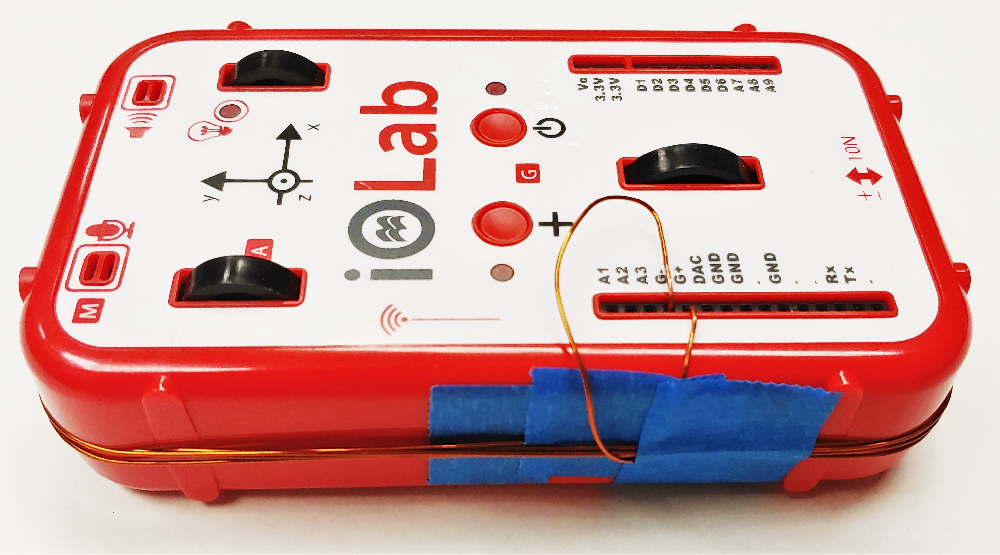
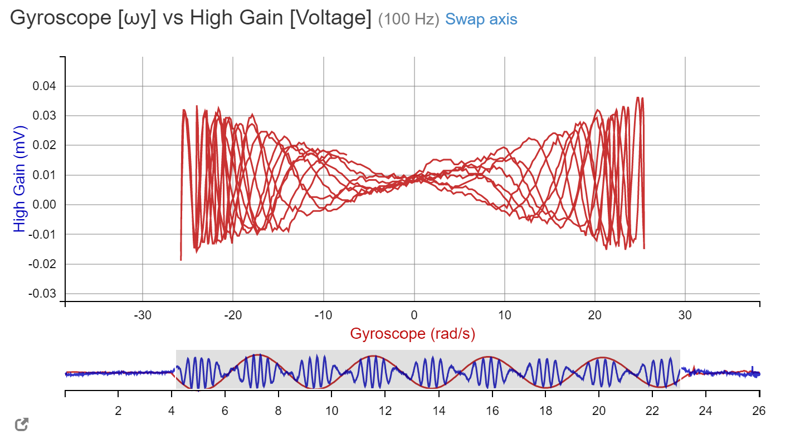
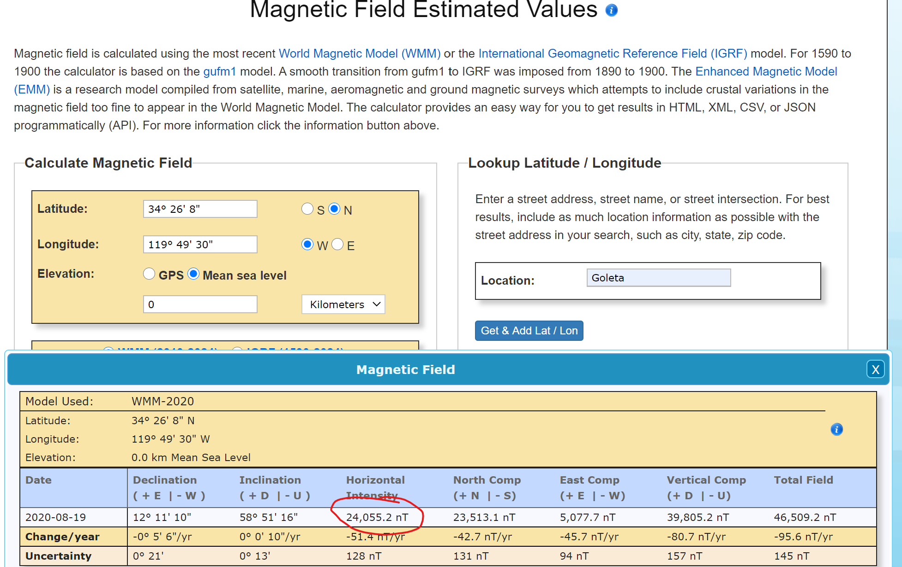

Now that we have completed two projects focusing on the physics of moving charges --- their behavior in external magnetic fields and the magnetic fields they themselves generate --- we now move on to talk about moving magnets.
As you may have learned by now, similar to the way a moving charge (and, hence, a changing electric field) can generate a magnetic field, a changing magnetic field also induces an electric field. This electric field, like any, has the ability to do work. Specifically, we will be interested in how it can do work to generate current in a wire. In this lab, we will investigate the current induced in a loop of wire in the vicinity of a moving magnetic source.
The equation that describe the creation of an electric field due to a changing magnetic field is Faraday’s Law. It states that if any open surface experiences a time varying magnetic flux, then a net voltage (or emf) exists around the perimeter of that surface. Here, flux refers to the net magnitude and direction of magnetic field lines penetrating the area enclosed by a loop of wire, or
ΦB=B⋅A
Equation 1
For a coil with a loop of area A, Faraday’s Law predicts the emf measured around the perimeter is
Vcoil=Vloop=−dtdΦB
Equation 2
Note that the cause of Faraday’s Law is some time-varying external magnetic field.
Lenz’ Law states that the established current flow in the loop will be in a direction such that the magnetic field generated by this current opposes the change in the magnetic flux from the external field.
What direction does the current flow in such a situation? The question is addressed by Lenz's law, which states that the magnetic field generated by the current flow (recall the previous lab experiment) will point in the direction opposite to the external magnetic field --- the electron motion attempts to generate a B field which "cancels out" the flux, so that the total field in the region is B=0.
Question 1
Try to describe what would happen if, instead, the current generated a magnetic field that aligned with the external flux., recalling that a current itself generates a magnetic field. Which laws of physics would might this ultimately break?
For a coil with N loops in series, the area increases to NA, so Faraday’s Law predicts the emf measured around the perimeter is:
Vcoil=NVloop=−NdtdΦB
Equation 3
The effect of these loops is to essentially amplify the emf by a factor of N. In this experiment we will have a coil with 4-5 loops, which will be able to measure earth's magnetic field.
Part II: Experiments
This lab will involve the study of Faraday’s Law and Lenz’ Law acting upon a coil, which will be created by winding a wire around the iOLab device. Lenz’ Law will be measured by moving a magnet suddenly toward or away from the coil and observing the direction of current. Faraday’s Law will be measured by spinning the iOLab in the earth’s magnetic field and measuring the voltage as a function of rotational velocity.
1. Prelab Setup
Materials needed:
iOLab
Neodymium magnet
Long wire
Hook and spring
Time to Complete:
1 minute reading
10 minutes setup and data
5 minutes questions
Before starting the exercises, as always, make sure your iOLab is calibrated! The experiment in this lab requires us to construct a series of loops, which we will do by conveniently wrapping our enameled wire around the iOLab in the exercise below.
Exercise 1
We will wind the coil around with the two ends inserted into the “G+” and “G-” inputs of the iOLab. These should be inserted such that if the current in the loop moves counterclockwise, it will flow into G+ making a positive signal, and vice versa. This configuration is used to ensure that the iOLab coordinate system is consistent with the right-hand rule.
iOLab setup:
Ensure you have calibrated your device, and that you have removed as much enamel as possible from the tips of you wire.
Plug one end of the wire into “G+”
Extend the wire to the side and secure it with tape so that we can continue the winding process.
Wrap the wire in the clockwise direction for 4 or 5 turns (write down how many somewhere). Try to keep the winding orderly, like a coil, and as tight as possible.
Finishing by plugging the remaining end into “G-”.
Use tape as necessary to secure the wire.

Figure 1
To verify the coil is working as expected and capable of taking data, follow the verification steps in Exercise 2 below:
Exercise 2
Verification:
Identify the South pole of your magnet
Open the iOLab software and select the "High Gain" sensor
Hit "record"
With the south pole of the magnet facing the loop, move the magnet towards the center of your loop very quickly
You should see the measurement jump in the plot.
Make sure this jump (positive or negative) is consistent with Lenz's law -- otherwise, check the direction of your winding.
Question 2
a. What direction does the voltage jump?
b. A positive voltage jump means that current is flowing from G- to G+. Based on the direction of your wire winding, is the current flowing clockwise or counter clockwise?
c. Now consider the orientation of your magnet, where the south pole should have been facing your loop. Does your observation of the current direction match Lenz's law?
2. Measuring Earth's Field with Faraday’s Law
Materials needed:
iOLab wrapped with Long wire
Spring
Ruler
Time to Complete:
10 minutes reading
10 minutes data
10 minutes questions
We will now use the iOLab coil to measure the horizontal component of Earth's magnetic field using Faraday's Law.
The discussion below is a bit more "mathy" than previous labs, but the procedure is actually quite simple. Don't be intimidated! You are all very capable of working through this, or else I would not include it :)
We want to use the Earth’s magnetic field to generate an induced emf. An emf will be induced if flux is changing, but unlike the local field generated by a tiny magnet, Earth's field is constant over large areas, so we will need to be clever about our experimental set up.
Recall that flux is ΦB=B⋅A, meaning that it depends on the angle between the direction of the magnetic field and the plane of the loop. This implies that rotating the loop should result in a change of flux! Say we changed the angle of the loop as a function of time; the resulting expression would be:
ΦB(t)=B⋅A=BAcos(θ(t))
Equation 4
Let's use the equation for the EMF now and try to calculate the voltage over time by taking the derivative of the above using the chain rule:
where ω(t)=θ˙(t) is the angular velocity of the loop. This equation might look scary or unfamiliar and that's O.K. --- we are about to simplify things. Since sin(θ) is a function that is always between −1 and 1, we can choose to only consider data points angles that maximizes or minimizes this value. We call this the envelope of the function since it represents the highest and lowest possible values.
Replacing the sin term with ±1 gives us a simple linear equation for Vcoil v.s. ω,
Vcoil(t)=∓NBAω(t)
when
sin(θ(t))=±1
Equation 6
Let's be more concrete about this now: A controlled way of changing the angle of the loop is to hang the iOLab from from a spring and twist it so that it oscillates left and right. As we let the iOLab oscillate, a plot of Vcoil v.s. ω will trace out a complicated function that fills in a shape that looks like a bow tie, whose upper and lower edges are given by Equation 6 with slope NBA.:
AVOCADO: simulation for flux function
Simulation 2
Question 3
Say you know :
the area, A of your loops
the number of loops N of your coil
the slope, S, of the envelope Vcoil=Sω from your data.
Write down the expression for B in terms of A,N and S (Hint: Look at Equation 6).
You will need this equation to calculate Earth's magnetic field based on your data in the next exercise. If you don't understand this question, come back to it after completing the next exercise.
Exercise 3
The iOLab’s Gyroscope and High Gain sensor will gather the data. Make sure that the magnets from previous labs are moved far away from the experimental area.
Collecting data:
Hang the iOLab device from the spring at the edge of the table. For example, you could attach the spring to a binder clip on a textbook. Any way to keep the iOLab hanging securely will work. Please do this over a carpeted area or bed so you don't damage your device if you accidentally drop it.
Let it rest for a while until its orientation is relatively still.
Open the software, go to “chart mode” and select “Gyroscope”, and “High Gain” from the “sensors” column.
Note the orientation of the device and rotate it for three full revolutions.
Start recording and let go of the iOLab.
Figure 2
Let the device rotate for at least five cycles. You should see that the gyroscope y component is oscillating and the high gain is making small peaks on the plot.
Figure 3
Now switch to “parametric plot mode”, and change gyroscope to “ωy”.
The plot should be gyroscope vs. high gain. Highlight all data, and you should see a bow tie shape on the plot.

Using the “zoom” mode, record the coordinates of atleast 8 extrema on one straight line along the edge of the bow. By symmetry, you can choose either the increasing line or the decreasing line. These measurements correspond to the maximum voltage during rotation. Note that the x-axis has unit radian/second (rad/s) and y-axis has unit millivolt (mV).
To get the area of the coil, simply use a ruler to measure the x and y dimensions of the iOLab.
After completing these steps, you should have all values needed to calculate the slope (and hence the magnetic field) from Faraday’s Law.
Question 4
(a) Enter the coordinates of your extrema from part 9 into a spreadsheet and calculate the slope, with units and reasonable sigfigs.
(b) Using the expression you derived in Question 3, calculate B with appropriate units.
3. A first look at error analysis
Time to Complete:
10-20 minutes reading
15-30 minutes questions
The measurement you made in Exercise 2 should reflect the Earth's magnetic field, however there are many factors that can influence the quality of your data. In this section, we will introduce you to some basic error analysis that will help you determine the quality (accuracy and precision) of your data. At the end of this section I have an example of my own error analysis to guide you through the process!
Part 1: Comparison to an Accepted Value.
A fundamental step of experimental work (in any STEM field) is comparing your measured value to some accepted value. Here we will compare the B measured in Excercise 2 to the NOAA database.
Question 5
(a) Visit NOAA's website and look up the magnitude of the horizonal magnetic field at your current location. Record this value in units of μT.

(b) Calculate the discrepancy with your measurement:
discrepancy=∣acceptedvalue−yourvalue∣
(c) What is the sign of your discrepancy? I.e., is your value higher or lower than the accepted?
Part 2: Estimating uncertainty.
It is very unlikely that your result perfectly matches the value in the NOAA database --- in fact most experiments never give values that are right "on the nose" due to uncertainty . In reality, we care really care if our measurement is reasonably close. "Reasonably" means within our expected margin of error --- whether that be not having an exactly precise value for our loop area or our slope being slightly off.
We will now crudely estimate our uncertainty. While more advanced lab courses will later introduce you to formal error analysis, we will stick to a simpler approach that addresses the important concepts.
Question 6
For this question we will assume that the slope of your line is likely correct, and that any error is related to your area measurement.
(a) Based on how accurately you where able to measure the dimensions of the iOLab, estimate how much you could have possibly overestimated or underestimated the area of the coil, and call this value δA.
(b) Write your area as Area=(A±δA)m2. For example, if measured an area of 104 cm2 and was not very confident in this so δA=3 cm2 , I would write
Area=(1.04±0.03)×10−2m2
(c) Return to you equation B=S/NA and calculate the uncertainty bounds on your measurement by plugging in A−δA and then A+δA. Write your result as Bh=(B±δB) as before.
Part 3: Accepted Value v.s. Error Bounds
We've now calculated the error bounds on your result considering the uncertainty in your area measurement. Our final task is to determine if your measurement is reasonably close.
Question 7
From the results of questions 5 and 6, is your discrepancy greater than your ∣δB∣? In other words, does the accepted value fall in the range of values given by B±δB?
If the answer to Question 7 is yes, or, congratulations! More than likely, this will not be the case. Here are some tips for understanding your result:
If the accepted value comes close to these bounds, say within (B±2δB) you can likely consider your experiment a success.
If the accepted value is very far from your bounds, you likely have either made a math/units mistake, or you have a large source of systematic error that is affecting your results. Some examples of this could be objects or walls that are distorting or blocking the magnetic field where you are working (would this lead to a larger or smaller B value?), or forgetting to put away magnets.
Question 8
If your result is not consistent with the accepted value, even with error bounds, propose a reason why. Make sure your explanation makes sense!
Part 4: An example
This section is optional to read: here I am just recounting my own experience with this lab and my error analysis.
In first attempt at this lab I measured the following values:
A=
S=
N=5
This resulted in a Magnetic field strength of B=13μ T. Using NOAA's website, I found that the horizontal B field at my location was 24μT, such that my discrepancy was 11μT
Going back, I proceeded to calculate my error bounds on A. I assumed my accuracy (using a poorly marked meter stick) was about δA=1cm2. I then calculated the magnetic field for the upper and lower bounds on my Area and found:
B=(13±)
The comparison between NOAA's value was still way off. Because the my value was less than the accepted, and I was fairly confident in my values for S and N, I reasoned that the B field in the room must be much weaker than outside.
I went back and repeated the experiment outside (you are not required to do this, of course, as long as you give an explanation of your discrepancy), and indeed: Broida hall, with its thick walls and metal beams, was acting like a weak Faraday cage. My new slope came out to 53 mV⋅ s, giving me B=(22±)μT.
The accepted value is not in these bounds, but it is signifigantly closer. The remaining error, I reasoned, was probably due to the buildings and specific geography of my location, or some slight wobbling of my iOLab since I was holding it with my hand, exposed to the wind.
Part III: Write-up
For Part I, give a short summary of the Faraday's Law, and describe what magnetic flux is
For Part II, write a short paragraph describing the procedure taken and any important observations for each Exercise. Be sure to summarize your results, and reasons why you believe your data are precise and accurate. If you do not think your data are accurate, explain why, and how it could be fixed in a future lab.
You are encouraged to attach images of your plots, data, and setup -- doing so may allow you to regain partial or full credit even if your experiment fails.
At the end of your write-up, please include the answers to all questions, clearly numbered. Show your work if applicable.